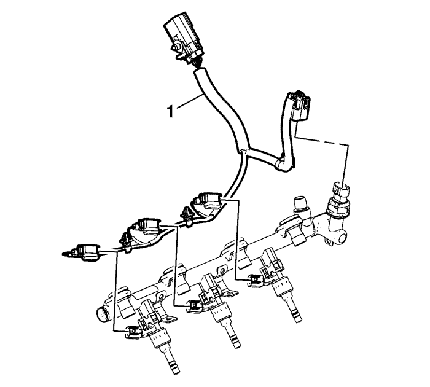
- Desconecte y extraiga el mazo de cables del tubo de distribución de combustible (1).
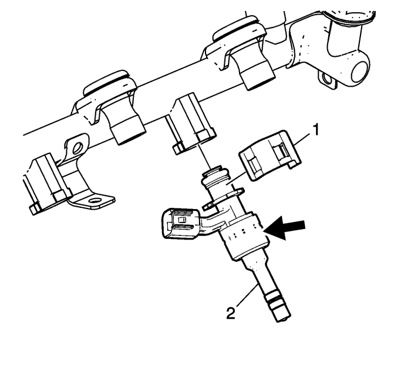
- Procurando no tocar ni aplicar fuerza sobre la punta del inyector o sobre el conector eléctrico, desmonte la fijación del inyector de combustible (1) separando ambos lados al mismo tiempo. Puede utiliar unos alicates de pinzas para anillos elásticos para esta tarea. Deseche la fijación.
- Sujetando únicamente el diámetro/cuerpo mayor del inyector, indicado por la flecha en el gráfico, y utilizando un ligero movimiento giratorio, extraiga el inyector de combustible (2) del tubo de distribución de combustible.
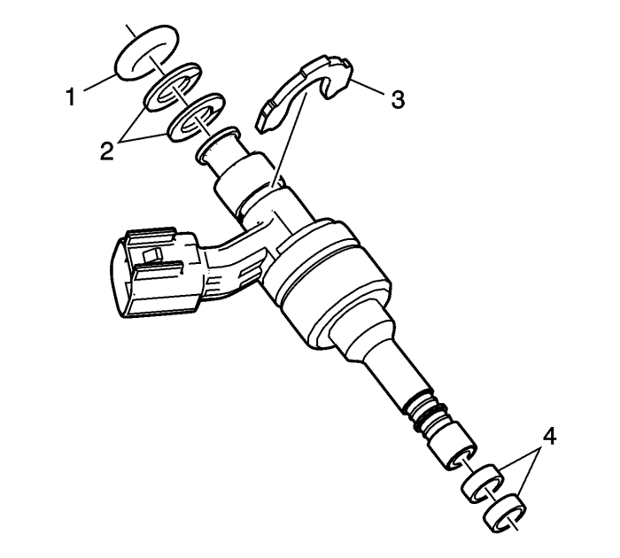
- Utilizando unas tenazas, extraiga el casquillo del inyector de combustible (3) del cuerpo del inyector. Deseche el casquillo (3). Retire y deseche la junta tórica (1) y los distanciadores de plástico del inyector de combustible (2).
- Retire y deseche las juntas de la válvula de inyección de combustible (4).
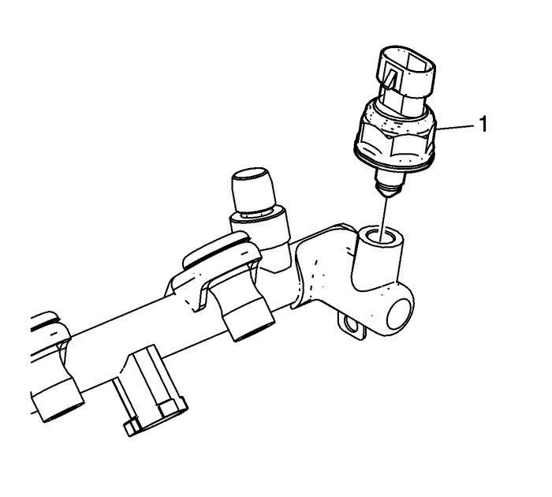
Nota: Si aplica fuerza a la carcasa de plástico del sensor, se destruirá el sensor. Para apretar o aflojar, aplique solamente la fuerza en el hexagono acoplado.
- Extraiga el sensor de presión del combustible (1).
Nota: No humedezca ni sumerja el tubo de distribución de combustible o las válvulas de inyección en disolvente.
- Limpie el exterior del tubo de distribución de combustible y las válvulas de inyección con disolvente.
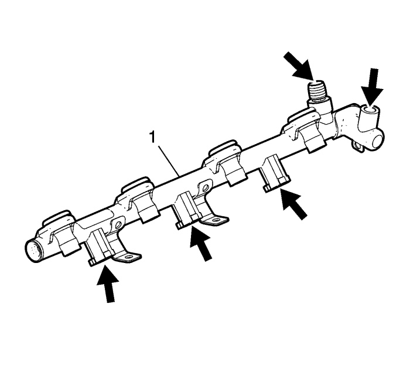
- Revise el tubo de distribución de combustible (1) y los componentes para comprobar lo siguiente:
| • | Daños, residuos u obstrucciones en el tubo de distribución del combustible |
| • | Daños, residuos u obstrucciones en las bocas de carga de combustible del tubo de distribución de éste. |
| • | Daños en el área de soporte del tubo de distribución de combustible. |
| • | Daños en los pernos de fijación o en los ojales/aislantes de los pernos de fijación del tubo de distribución de combustible. |
| • | Daños en las roscas en el accesorio de alimentación del tubo de distribución de combustible |
| • | Daños en las roscas en el orificio del sensor de presión de combustible |
| • | Daños en el conector, las roscas o la superficie de sellado del sensor de presión de combustible |
Nota: Si aplica fuerza a la carcasa de plástico del sensor, se destruirá el sensor. Para apretar o aflojar, aplique solamente la fuerza en el hexagono acoplado.
- Monte el sensor de presión de combustible (1).
| | Nota: asegúrese de que las roscas del tubo de distribución de combustible se han limpiado de cualquier resto de combustible o el sensor de presión de combustible NO se sellará de forma correcta. |
| 9.3. | Monte el sensor de presión de combustible y apriételo a mano. |
| 9.4. | Desmonte el sensor de presión de combustible y vuelva a lubricar. |
Precaución: Consulte Precaución con las fijaciones en la sección Prólogo
| 9.5. | Monte el sensor de presión de combustible y apriételo hasta 33 N·m (25 lib. pie). |
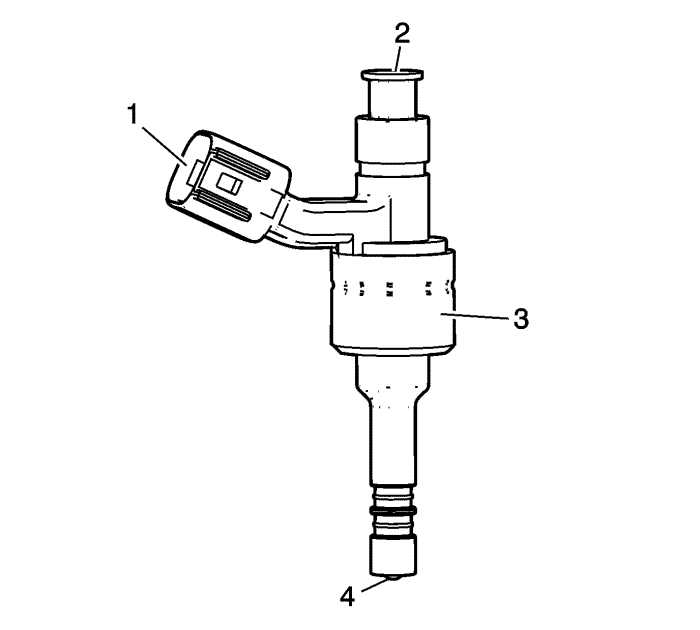
- Examinar los inyectores de combustible por si se observan las siguientes condiciones:
| • | Daños en el conector de la válvula de inyección de combustible (1) |
| • | Daño en el cono de entrada de combustible (2) |
| • | Daños en el cuerpo de la válvula de inyección de combustible (3) |
| • | Daños en la punta de la válvula de inyección de combustible (4) |
- Sustituya el tubo de distribución de combustible o la válvula de inyección si se encuentra cualquier daño. No intente reparar el tubo de distribución o válvula de inyección del combustible
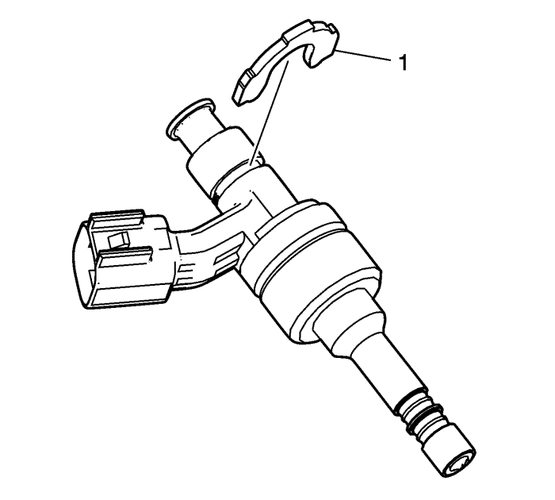
Nota: El casquillo del inyector de combustible (1) no debe instalarse ANTES de montar la junta tórica o los anillos auxiliares.
- Monte el NUEVO casquillo del inyector de combustible (1) en el cuerpo del inyector. El casquillo debería quedar asentado con un "chasquido" audible. Asegúrese de que el casquillo está bien asentado.
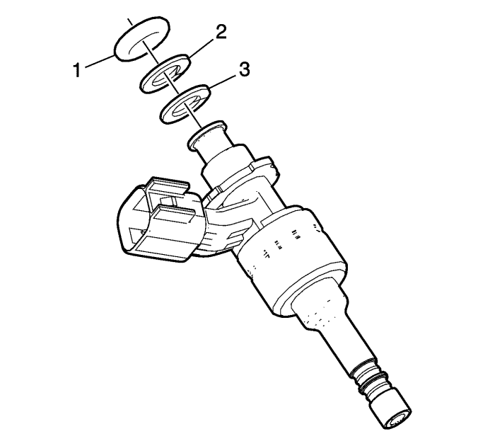
- Monte el NUEVO distanciador de plástico blanco (3) en primer lugar en el inyector de combustible.
- Monte el distanciador de plástico marrón (2) en segundo lugar.
- Lubrique la NUEVA junta tórica (1) con aceite de motor 5W30.
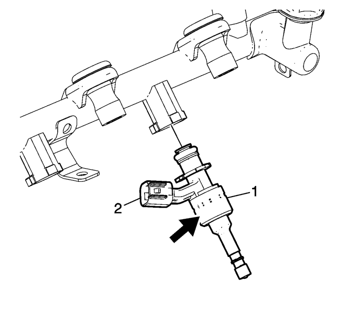
Nota: NO monte las juntas de teflon de la punta/orificio del inyector hasta DESPUÉS de haber instalado los inyectores en el tubo de distribución de combustible.
- Sujetando únicamente el diámetro/cuerpo mayor del inyector, indicado por la flecha en el gráfico, inserte el conjunto del inyector de combustible (1) en el tubo de distribución de combustible. Asegúrese de la correcta orientación del conector eléctrico (2).
- Fije el tubo de distribución de combustible en un banco de taller UTILIZANDO MORDAZAS BLANDAS para sujetar el tubo durante la instalación de la fijación.
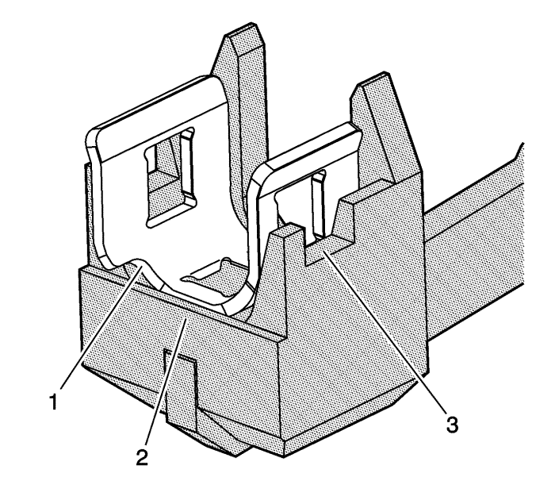
Nota: asegúrese de que la fijación está bien ajustada en la herramienta de montaje EN 49247.| • | La muesca siempre debería mirar hacia arriba (1). |
| • | La fijación debería quedar detrás de la placa (2). |
| • | Las ventanas de la herramienta permiten la alineación visual (3). |
- Monte la fijación del inyector de combustible en la herramienta de montaje EN 49247.
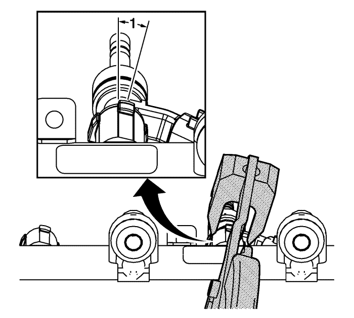
- Tenga en cuenta los siguientes puntos cuando se prepare para utilizar la herramienta de montaje EN 49247.
Hay un ángulo de rotación de 15 grados (1) en las bridas del tubo de distribución de combustible en relación al tubo. Debe sujetar la herramienta de montaje EN 49247 con un ángulo similar para asegurarse del montaje correcto de la fijación.
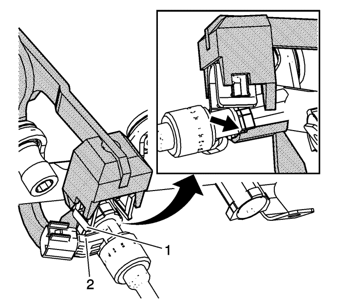
- La fijación (1) casi debería tocar el conector eléctrico (2), y la base de la herramienta de montaje EN 49247 debería colocarse tal y como se muestra antes de iniciar el accionamiento de la herramienta para completar el montaje. Esto ayudará a que la fijación quede correctamente colocada en relación con el inyector y las bridas del tubo de distribución de combustible.
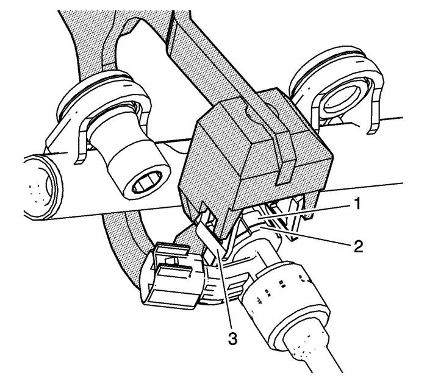
- Sujetando el casquillo del inyector (2) y las bridas del tubo de distribución de combustible (1) en la alineación, y sujetando firmemente el conjunto del inyector contra el tubo de distribución de combustible de forma que no quede ninguna separación entre (1) y (2), monte la fijación del inyector de combustible (3).
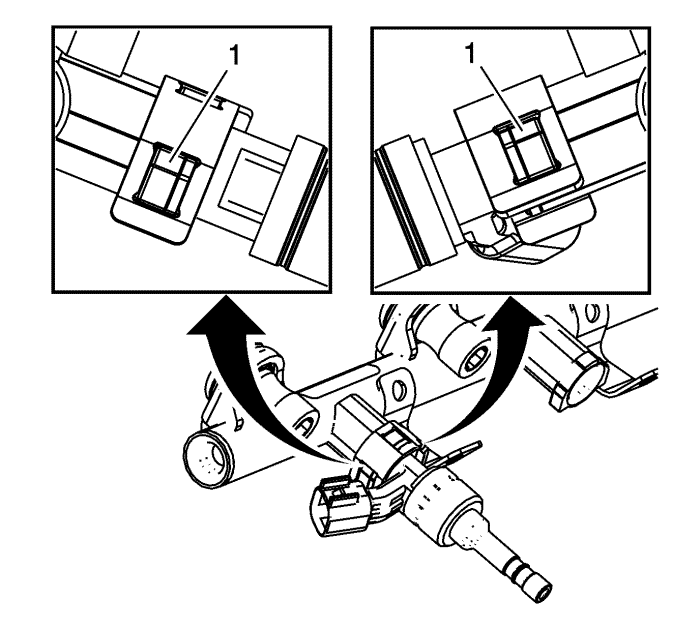
Atención: Asegúrese de que la fijación del inyector de combustible se ha montado correctamente. Si no se montan completamente las fijaciones, el rendimiento del sistema de inyección de combustible puede degradarse o provocar una avería en el sistema.
- Asegúrese de que las 3 lengüetas del casquillo del inyector de combustible y las bridas del tubo de distribución de combustible (1) están bien sujetas por la fijación del inyector de combustible.
- Repita el proceso para el resto de inyectores hasta que todos estén montados y fijados al tubo de distribución de combustible.
- Monte el mazo de cables del tubo de distribución de combustible (1).
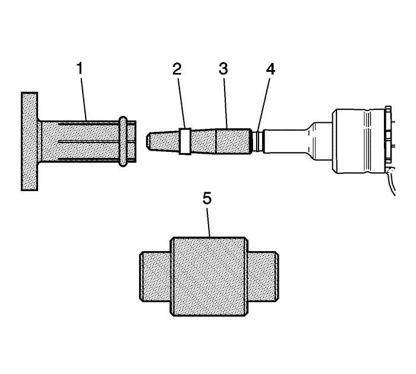
Nota: No use ningún tipo de lubricante al montar las NUEVAS juntas (2) en la punta de inyección de combustible.
- Monte el protector largo EN 49245-1 (3) en la punta del inyector, cubriendo la primera zona ranurada más cercana a la punta. Coloque una NUEVA junta (2) sobre el protector largo EN-49245-1.
- Utilizando la pieza de embutición EN-49245-3 (1), monte la junta en la segunda área ranurada (4) del inyector de combustible.
Nota: El calibrador EN-49245-4 tiene dos caras, y en cualquiera de las dos direcciones calibrará la junta correctamente.
- Comprima la junta con los dedos antes de volverla a ajustar con el calibrador EN-49245-4 (5).
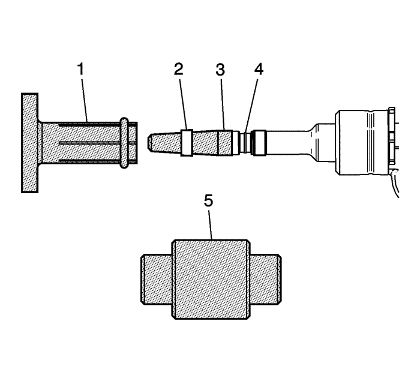
Nota: No use ningún tipo de lubricante al montar las NUEVAS juntas (2) en la punta de inyección de combustible.
- Monte el protector corto EN-49245-2 (3) en la punta de inyección de combustible. Coloque una NUEVA junta (2) sobre el protector corto EN-49245-2.
- Utilizando la pieza de embutición EN-49245-3 (1), monte la junta en la primera área ranurada (4) del inyector de combustible.
Nota: El calibrador EN-49245-4 tiene dos caras, y en cualquiera de las dos direcciones calibrará la junta correctamente.
- Comprima la junta con los dedos antes de volverla a ajustar con el calibrador EN-49245-4 (5).